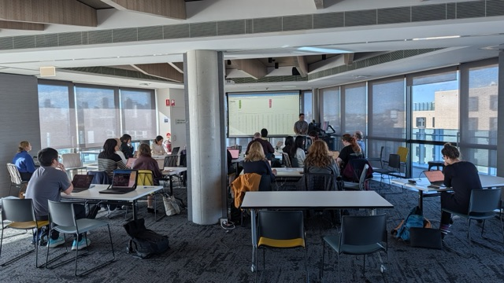
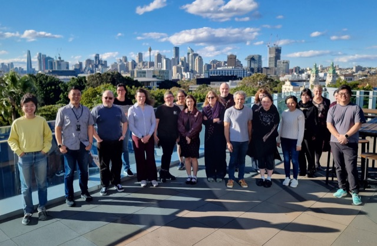
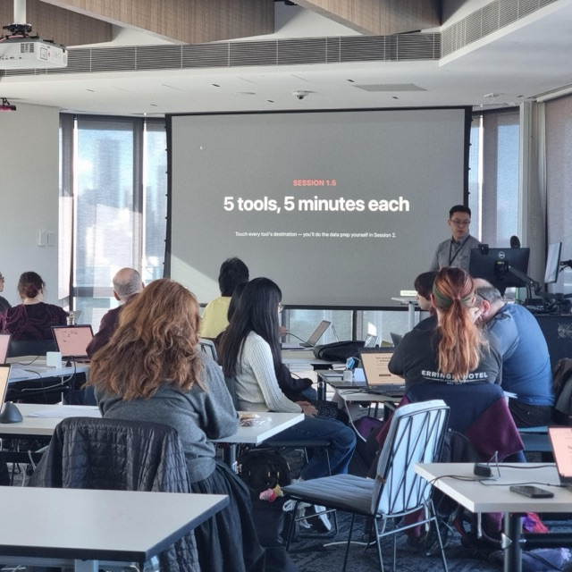
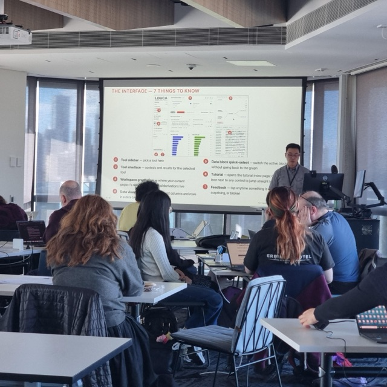
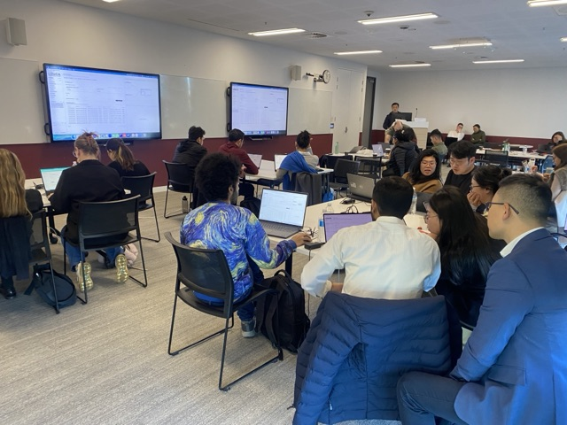
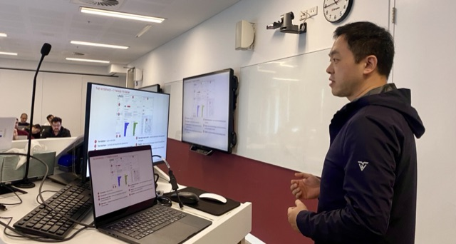
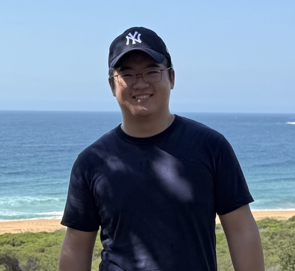

Load your text, then stack single-purpose tools — frequency, concordance, trends, topic modelling, quotation — along the flow of your data. Every tool is a lens; the analysis is shaped by how you shape your data, not by which tool you click.
Wordflow is the largest tool in the LDaCA Text Analytics Tools suite — a web app for researchers who work with text. You bring a corpus; Wordflow gives you a workspace where each analysis becomes a data block you can branch, filter, and feed into the next tool. Tools talk to each other: click a word in Frequency and it opens in Concordance; send a result to the workspace and group it in Trends.
Stack tools differently along the flow of text, and you've built a workflow. That's Wordflow.
Compare word usage across corpora as word clouds or ranked lists, with stopwords and statistical measures.
Search several patterns at once with regular expressions, and read every match in its surrounding context.
Track how usage changes over time — or across any numeric axis — grouped any way your data allows.
Discover themes automatically across one or more corpora, with shared themes shown as blended colours.
Extract who said what, with speaker and reporting verb tagged for each quotation.
Your project is a tree of derived data — join, filter, preprocess, and save or share a portable workspace.
Click any screenshot to view it full screen — click again to return.
Pick whichever suits you — the same Wordflow, the same tools.
Runs in your browser, free, ready in a couple of minutes. Best for trying it out — don't put sensitive data on it. Hosted on ARDC BinderHub: sign in with your institution via AAF (Australia) or Tuakiri (New Zealand).
Launch in BinderA native installer that bundles everything, including the backend runtime — it all runs locally, so your data never leaves your computer. Recommended for serious work.
Same performance as the desktop app. Only worth it if you already work in Python.
pip install ldaca-wordflow
uvx ldaca-wordflow@latest
The macOS desktop app is Developer ID signed and notarized. On Windows you may see a security prompt — choose "More info" → "Run anyway".
We run hands-on workshops introducing Wordflow to university researchers, in person and online: from HDR students to senior academics, across faculties. No coding required.






A one-day online workshop in two halves: a recorded morning tour of Wordflow (concepts, interface, a complete multi-tool workflow), and an afternoon hands-on with the new Annotation tool. You set the coding standard; the AI applies it at scale.
A 45-minute hands-on at the CAITG (Centre for AI, Trust and Governance) Winter School: participants coded a real dataset with an AI model of their choice, then checked its work with intercoder reliability and a confusion matrix.
A 3-hour intro: a tour of all five analysis tools, one real multi-tool research workflow from raw data to findings, and a free hands-on lab. Run by the Sydney Informatics Hub.

All at the University of Sydney, a partner institution of the Language Data Commons of Australia (LDaCA) — a co-investment partnership with the Australian Research Data Commons (ARDC) through the HASS and Indigenous Research Data Commons.
Please cite it — and click the green quote icon in the app sidebar for a version-specific citation.